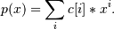

numpy.polynomial.polynomial.polyroots¶
- numpy.polynomial.polynomial.polyroots(c)[source]¶
Compute the roots of a polynomial.
Return the roots (a.k.a. “zeros”) of the polynomial

Parameters: c : 1-D array_like
1-D array of polynomial coefficients.
Returns: out : ndarray
Array of the roots of the polynomial. If all the roots are real, then out is also real, otherwise it is complex.
See also
chebroots
Notes
The root estimates are obtained as the eigenvalues of the companion matrix, Roots far from the origin of the complex plane may have large errors due to the numerical instability of the power series for such values. Roots with multiplicity greater than 1 will also show larger errors as the value of the series near such points is relatively insensitive to errors in the roots. Isolated roots near the origin can be improved by a few iterations of Newton’s method.
Examples
>>> import numpy.polynomial.polynomial as poly >>> poly.polyroots(poly.polyfromroots((-1,0,1))) array([-1., 0., 1.]) >>> poly.polyroots(poly.polyfromroots((-1,0,1))).dtype dtype('float64') >>> j = complex(0,1) >>> poly.polyroots(poly.polyfromroots((-j,0,j))) array([ 0.00000000e+00+0.j, 0.00000000e+00+1.j, 2.77555756e-17-1.j])